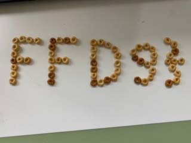

ファイル stub が与えられた。
A file stub was given.
Applying "Extract Files" on
さらに、stub からバイナリエディタで ff d8 を検索すると、
この2枚の画像に相当する位置に加え、位置 0xe443 にも見つかった。
そこで、CyberChefを用いてこの位置の前までの部分のデータをカットし、残りを画像として表示させた。
Then, I searched for ff d8 from the file stub using a binary editor.
As a result, it was found at 0xe443 in addition to positions corresponding to the images.
Seeing this, I used CyberChef to remove data before this and see the remaining data as an image.
すると、以下の画像が得られた。
This resulted in this image:

これらの画像に書かれている文字列を組み合わせた sdctf{FFD8_th3n_SOME_s7uff_FFD9} をflagとして送信すると、not the correct flag という判定になった。
O (オー) を0 (ゼロ) に変えることで、flagが得られた。
I submitted sdctf{FFD8_th3n_SOME_s7uff_FFD9}, which is created by combining strings on the images, as the flag. However, it was judges as "not the correct flag".
I obtained the flag by changing O (oh) in this string to 0 (zero).